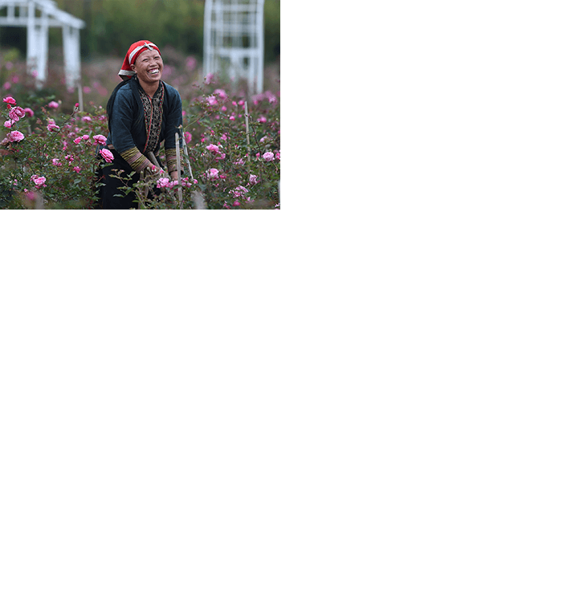
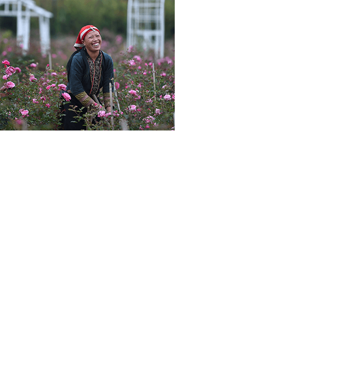

Trải qua hai thế kỷ,
thị trấn mờ sương đã mang hình hài khu du lịch quốc gia,
với nhiều công trình đẳng cấp vươn tầm thế giới.
Ngày 11/11, Giải thưởng Du lịch Quốc tế (WTA) vinh danh khu du lịch Sun World Fansipan Legend ở hai hạng mục: Điểm du lịch văn hóa hàng đầu thế giới; Điểm du lịch có thắng cảnh thiên nhiên hàng đầu thế giới.
Đây là lần thứ 4 liên tiếp, “Oscar của ngành du lịch thế giới” xướng tên khu du lịch của Tập đoàn Sun Group. Khách sạn Hotel de la Coupole - MGallery – tuyệt tác kiến trúc do Bill Bensley thiết kế tại trung tâm thị xã cũng được vinh danh ở hạng mục Khách sạn có thiết kế hàng đầu thế giới.
Những danh hiệu của WTA đến đúng thời điểm ngành du lịch Sa Pa đang rốt ráo tổ chức nhiều sự kiện, hoạt động du lịch, hướng tới cột mốc kỷ niệm 120 năm.
Người Sa Pa có nhiều lý do để tự hào, bởi ngay tại Việt Nam, ít có địa danh du lịch nào có bề dày hình thành và phát triển du lịch lâu đời như thị trấn mờ sương. Sau hai thế kỷ, thương hiệu Sa Pa không chỉ nổi tiếng với du khách trong nước, mà đã trở nên quen thuộc với du khách quốc tế, là địa danh yêu thích của khách nước ngoài khi tới Việt Nam.

Sức hấp dẫn có một không hai của Sa Pa đã được biết tới kể từ mùa đông năm 1903, khi đoàn thám hiểm chính quyền Đông Dương phát hiện ra nơi này. Những năm sau đó, người Pháp đã không ngừng xây dựng biệt thự, khu nghỉ dưỡng tại đây.
Năm 1920, gần 300 biệt thự đã được xây dựng, biến nơi đây trở thành "kinh đô nghỉ mát mùa hè" của toàn cõi Ðông Dương. Trên Tạp chí Đông Dương, năm 1943, Chánh Sở Quy hoạch đô thị và Kiến trúc Đông Dương có viết: “Sa Pa, khu nghỉ dưỡng tuyệt đẹp khiến ta gợi nhớ đến dãy núi Alps”. Đây có thể xem như một minh chứng quá đỗi xác thực cho sức hấp dẫn tự nhiên của núi rừng Tây Bắc.

Song, du lịch Sa Pa cũng có những nốt trầm. Giai đoạn 1945-1951, chiến tranh liên miên diễn ra, hoạt động du lịch tại đây bị chặn đứng. Tháng 4/1951, Pháp rút khỏi Sa Pa, những công trình người Pháp xây dựng trước đó bị phá huỷ. Một thời gian khá dài sau đó, các hoạt động du lịch trên địa bàn không tiếp diễn, chỉ có người dân địa phương tham gia vào công cuộc tái thiết và phát triển kinh tế. Ngành du lịch nơi này bị chìm vào quên lãng.
Từ những năm 1991, chính quyền Lào Cai bắt đầu chú trọng phát triển du lịch. Tỉnh dành một phần ngân sách để đầu tư phát triển cơ sở hạ tầng, từ việc kéo điện lưới quốc gia, xây dựng hệ thống nước sạch, tuyến đường nội thị, cải tạo đường nối Lào Cai với Sa Pa…
Dẫu vậy, Sa Pa còn đọng vẻ đìu hiu, vắng lặng, như cách nhà văn Nguyễn Thành Long mô tả trong truyện ngắn Lặng lẽ Sa Pa (1970). Nơi đây vẫn là một cổ trấn mù sương, với đỉnh Fansipan hùng vĩ, với những bản làng của các tộc người thiểu số hay nhà thờ cổ 100 năm. Trung tâm thị trấn lác đác những mái nhà sâu trong rừng mận, vườn thảo mộc... Những người phụ nữ dân tộc bán thổ cẩm, em bé nghe mẹ hát ru trên lưng. Những đứa bé má đỏ hồng, tay chân lem luốc chơi đùa dưới hàng cây. Những cô cậu thanh niên nhỏ tuổi, đuổi bắt nhau, ca múa dưới ảnh lửa bập bùng vào đêm lễ hội…
Để đặt chân tới thị trấn mờ sương, chiêm ngưỡng vẻ đẹp độc đáo đó, du khách từ Hà Nội sẽ phải ngồi tàu 7-8 tiếng đi đến Lào Cai, sau đó bắt tiếp những chuyến xe khách cũ kỹ, ọp ẹp đi men theo con đường dốc dựng đứng, mặt đường lóc xóc đá sỏi.
Khách nước ngoài ngày ấy tìm đến Sa Pa vì thiên nhiên hoang sơ, vẻ đẹp văn hóa bản địa. Họ cũng mong muốn chinh phục ngọn núi cao nhất Đông Dương, thông qua việc di chuyển qua quãng đường rừng khoảng 40km với nhiều thách thức.
Người dân thị trấn thời điểm đó đón và phục vụ khách du lịch theo bản năng và những gì sẵn có của địa phương. Họ không biết ngoại ngữ. Gần như không có nhà hàng, khách sạn nào được mở ra để phục vụ khách du lịch.
Từ năm 2001 đến 2005, chính quyền tỉnh Lào Cai đẩy mạnh đầu tư và quảng bá khu du lịch Sa Pa. Du lịch Sa Pa dần khởi sắc. Từng dòng xe nối nhau chở khách về thị trấn. Các khách sạn, homestay… được xây dựng để đáp ứng nhu cầu lưu trú. Các dịch vụ mới cũng xuất hiện như nhà hàng, tắm lá người Dao, massage...
quá khó khăn, mất tới hai ngày đêm leo rừng, ngủ núi mới đến được “Nóc nhà Đông Dương”. Và để chuẩn bị cho những chuyến đi ấy, kể cả du khách can đảm cũng phải rèn luyện sức khoẻ trước đó cả tháng trời.
Thời điểm đó, Sa Pa chỉ đón khoảng 500.000 lượt khách mỗi năm, chưa đủ hấp dẫn để níu khách lưu trú quá hai ngày. Chi tiêu của khách dành cho du lịch còn khiêm tốn với một địa danh được thiên nhiên ưu đãi, với văn hóa đặc sắc như rẻo cao vùng Tây Bắc này.
Những ngày đầu mới tái lập tỉnh, năm 1991, tỉnh Lào Cai nằm trong số 6 tỉnh nghèo nhất cả nước, thu ngân sách nhà nước trên địa bàn tỉnh chỉ đạt 36 tỷ đồng; thu nhập bình quân đầu người mới đạt 680.000 đồng một người mỗi năm. 50% số hộ dân Sa Pa vẫn thuộc diện hộ nghèo. Năm 2011, theo chuẩn nghèo mới, toàn tỉnh vẫn còn gần 43% hộ nghèo, hơn 14% hộ cận nghèo.
Cái nghèo quẩn quanh những bản làng, nơi người dân bám trụ với nghề bám nương làm rẫy. Nỗi khó khăn, nhọc nhằn tưởng chừng dập tắt ước mơ, hoài bão của những thanh niên dân tộc trẻ tuổi.
Như Má A Tông, chàng trai người H’Mông sinh năm 1990 ôm mộng làm hướng dẫn viên du lịch. Chạy vạy khắp nơi vay tiền để đi học, song vẫn không đủ, A Tông bỏ dở việc học, về Lào Cai làm phu bốc vác, vượt biên sang Trung Quốc làm thuê, làm porter (người thồ hàng) dẫn khách lên đỉnh Fansipan. Dẫu vậy, thu nhập từ những công việc này không đủ để anh chăm lo cho vợ và hai con nhỏ độ tuổi ăn học, chưa kể đến việc trả khoản tiền vài chục triệu đồng.
Giống Má A Tông, Chảo Láo Ú, sinh năm 1996, lớn lên cùng cái nghèo khó ở bản Kim, xã Thanh Bình, Sa Pa. Chưa đầy 20 tuổi, anh đối mặt với nhiều cú sốc của cuộc đời. Mẹ mất năm 2012, đúng thời điểm thi chuyển cấp, thiếu lao động chính, gia đình thường trực bữa đói bữa no. Người vợ trẻ ở bên vun vén, giúp anh hoàn thành bậc học phổ thông. Kế đó, Ú làm thợ xây ở các công trình để mưu sinh.
Biến cố thứ hai ập tới với Ú là khi vợ mang bầu sắp sinh, bị rắn cắn đe doạ tính mạng. Điều khiến Chảo Láo Ú đau xót nhất là để vợ bụng mang dạ chửa vẫn phải lên nương làm rẫy. Nhờ đắp được lá thuốc của người bản, vợ anh qua cơn nguy kịch. Con gái anh khỏe mạnh chào đời. Nhìn đôi bàn tay của vợ đã biến dạng vì rắn độc cắn, Ú nung nấu ý chí - "bằng mọi giá phải kiếm nhiều tiền để vợ con bớt khổ". Nhưng kiếm tiền bằng cách nào, chàng trai trẻ chưa biết sẽ tìm lời giải ở đâu.
Cùng bản với Chảo Láo Ú có Chảo Láo Sử, sinh năm 1992. Chàng trai người Dao lớn lên với ký ức tuổi thơ là những ngày tháng lầm lũi theo mẹ lên nương, với mái nhà không đủ ấm, bữa cơm chưa đủ no. Dù được tuyển thẳng vào Đại học Bách Khoa Hà Nội, nhưng Láo Ú sớm gác lại giấc mơ đại học để vừa đi làm nuôi gia đình, vừa tiếp tục học Trung cấp Y tế Lào Cai. Sau hai năm, tấm bằng trung cấp không giúp anh có được công việc ổn định, Sử về bản, bươn chải đủ thứ nghề, từ làm nương rẫy, chạy xe ôm, phụ xây…

 
